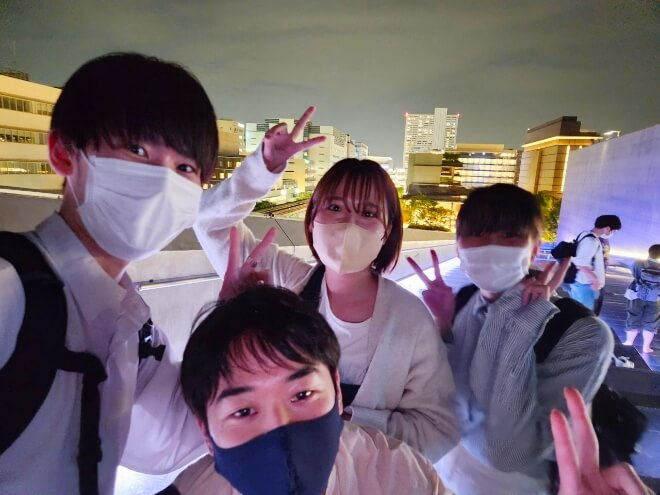
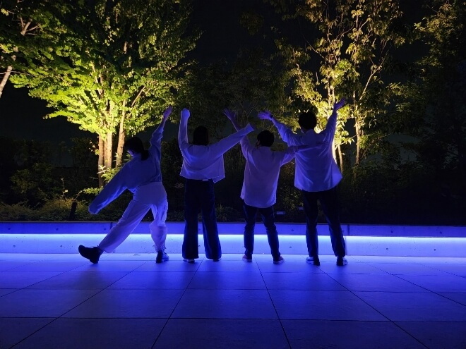

仲間を喜ばせる
私は企画表現5という授業で、チームメンバーとの仲を深めようと立川のグリーンスプリングスという場所に授業外で行きました。この企画表現5という授業は、立川を活性化する企画を立川市から依頼され、作った企画を実際に市の方にプレゼンし、良いものは採用してもらうというものです。
チーム6人ほどで結成され、私はそのリーダーになりました。チームは割と控えめな人が多く、あまり意見が出る環境ではありませんでした。
チームで進めるときは意見の出しやすい雰囲気作りが重要だと思った私は、ミーティングで盛り上げようと冗談を言ったり、自分から多く発言をしたりしました。
そして、もっとチームでの仲を深めようと授業で立川市役所に行った帰りに、立川グリーンスプリングスに行こうと提案しました。そしてグリーンスプリングスに着くとライトアップやお店がおしゃれでとても雰囲気が良かったです。全員あまり来たことがなかったこともあり、みんなのテンションが上がりました。 そこでもっと私は楽しめるように写真を撮ったりいろいろなとこを回るようにしました。
その結果、チームメンバーと盛り上がることができ、仲を深めることができました。 授業内のミーティングでも以前より発言しやすい雰囲気になったと思います。